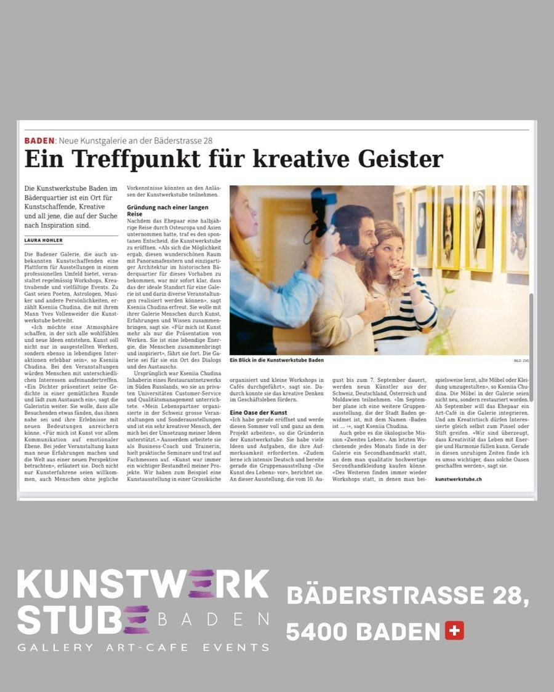
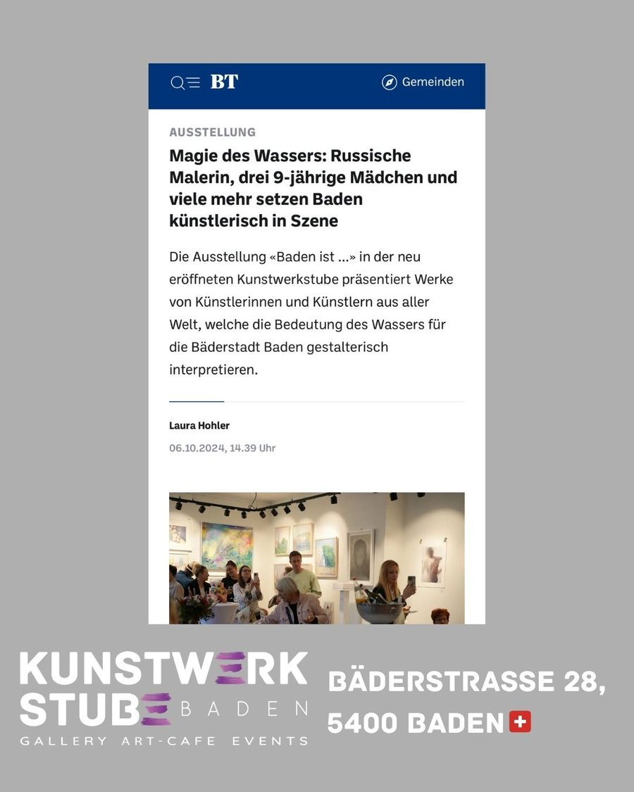
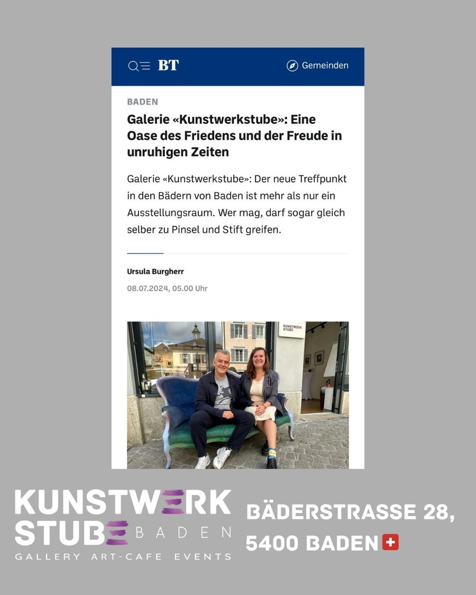
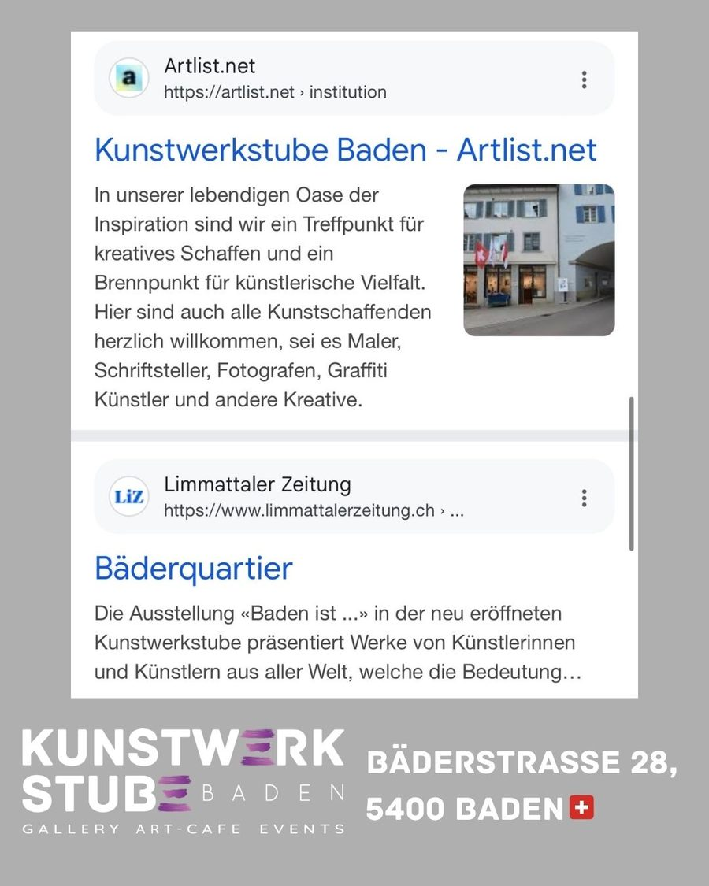
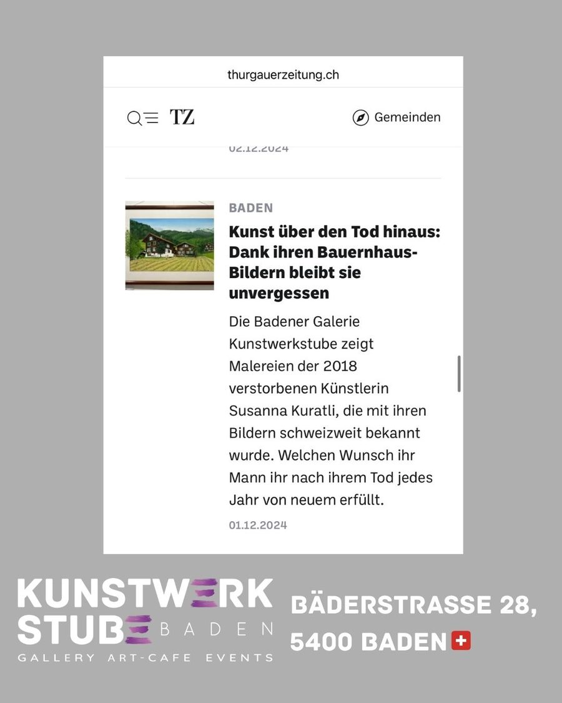
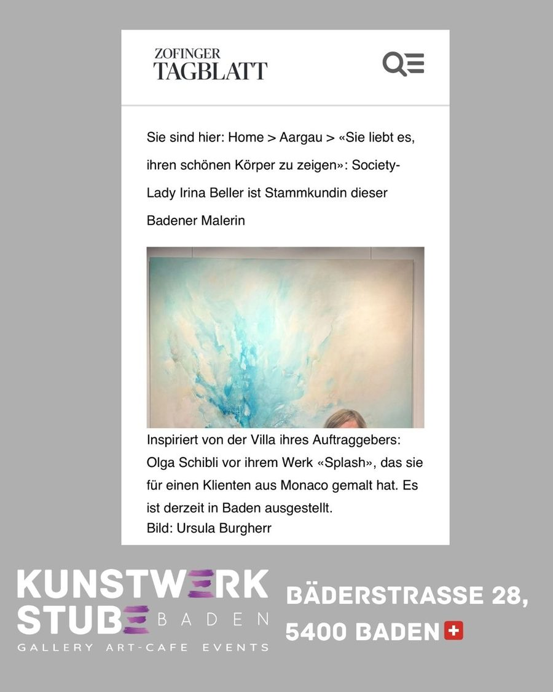
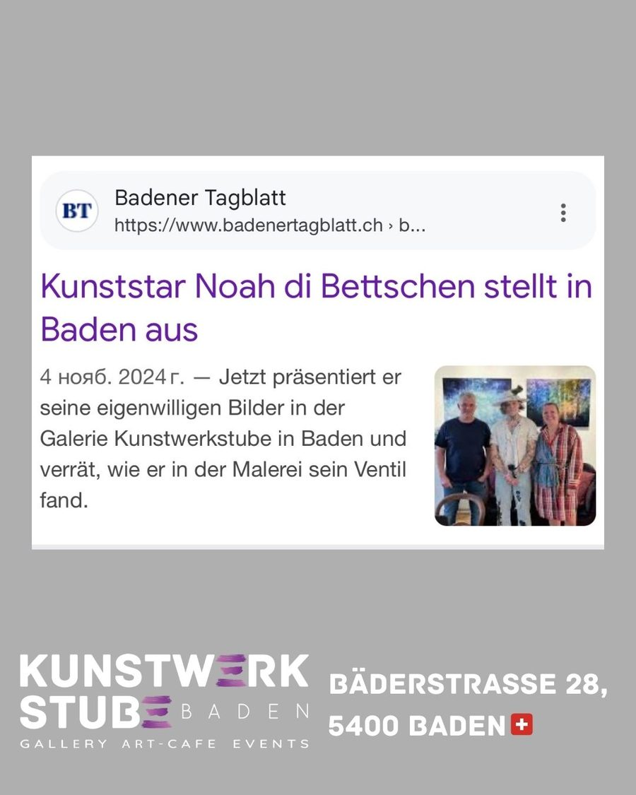
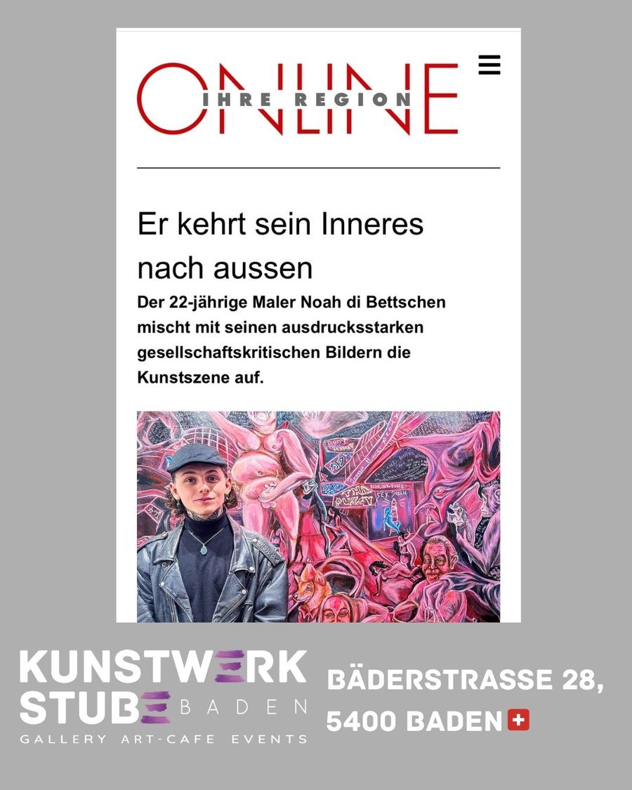
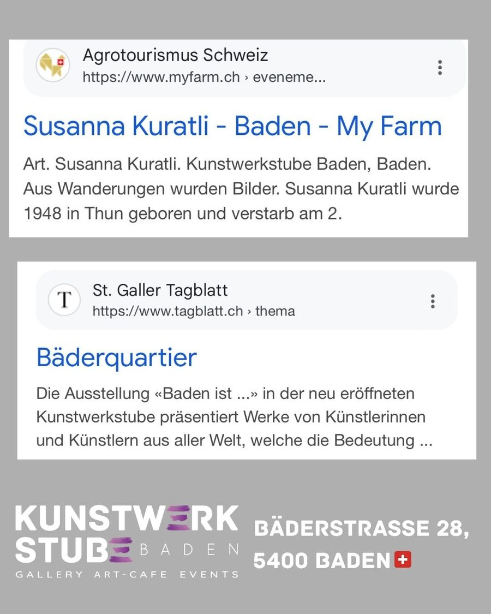

„Ein Treffpunkt für kreative Geister““A meeting place for creative spirits”

„Eine Oase des Friedens und der Freude in unruhigen Zeiten““An oasis of peace and joy in turbulent times”

„Kunststar Noah di Bettschen stellt in Baden aus““Art star Noah di Bettschen exhibits in Baden”

Noah di Bettschen – „Er kehrt sein Inneres nach aussen“Noah di Bettschen — “He turns his inner self outward”

„Er kehrt sein Inneres nach aussen““He turns his inner self outward”

„Vom Rebellen zum nationalen Kunststar““From rebel to national art star”

„Magie des Wassers“ – Ausstellung „Baden ist …““Magic of water” — exhibition “Baden ist …”

Susanna Kuratli – „Kunst über den Tod hinaus“Susanna Kuratli — “Art beyond death”

Kunstwerkstube Baden in der PresseKunstwerkstube Baden in the press